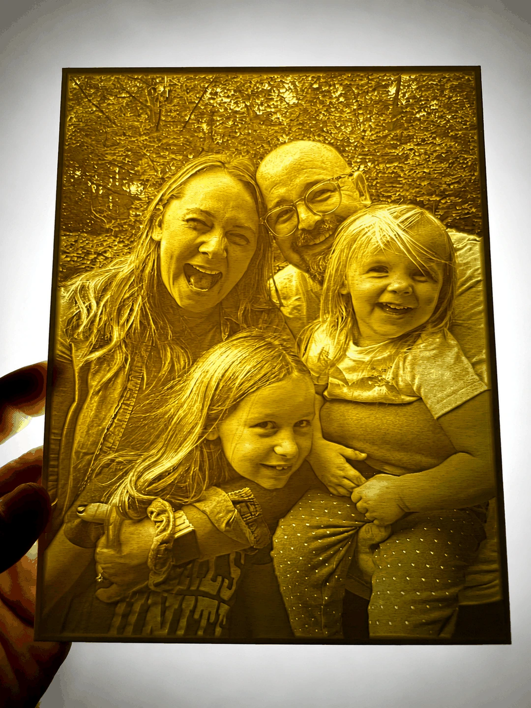

Custom 3D printing & design · Aurora, Ohio
Ideas become real.
OliPoly helps individuals, businesses, and community groups turn ideas, files, and practical needs into thoughtfully designed 3D-printed objects.
Design help is available. Custom work is quoted before production. Pickup is available in Aurora, with U.S. shipping and limited local delivery by arrangement.
Begin where it makes sense
What brings you to OliPoly?
Selected work
See what the studio has made.
Visit Studio →Custom creationsBring an idea, file, photo, or part.
Explore Creations →Business & organizationsPlan prototypes, branded work, or small batches.
Collaborate →Schools, teams & fundraisersExplore a group or community program.
Visit Community →OliPoly designsSee where future ready-to-make designs will live.
View Collections →A clear beginning
Bring what you have.
A rough description is enough to start. OliPoly typically reviews a new project request within 1–2 business days, then asks questions or prepares a quote.